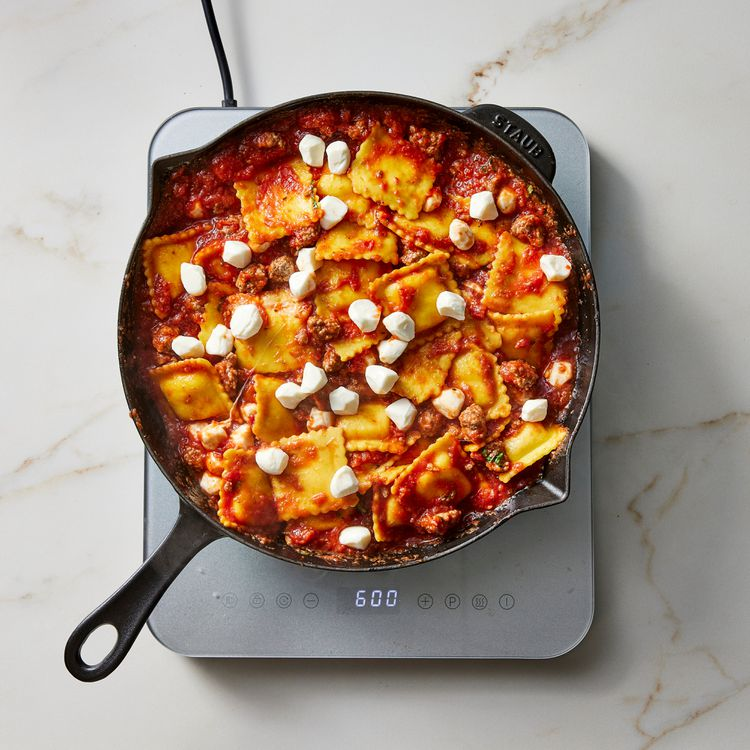

Home
Skillet Ravioli Lasagna

Description
This easy inside-out ravioli lasagna is the ultimate weeknight comfort
food—no layering or mixing bowls required. Feel free to swap in ground
turkey for the beef. Look for fresh mozzarella balls (also called
"pearls") in the specialty cheese section of your grocery store.
Ingredients
- 1 (24 ounce) package frozen or refrigerated cheese ravioli
- 1 pound lean ground beef
- 1 ½ teaspoons dried oregano
- ½ teaspoon garlic powder
- ½ teaspoon salt
- ¼ teaspoon ground pepper
- 1 (28 ounce) can no-salt-added crushed tomatoes
- ¼ cup chopped fresh basil
- 8 ounces small fresh mozzarella balls, divided
Directions
-
Preheat broiler. Bring a large pot of water to a boil. Cook ravioli
according to package directions; drain and set aside.
-
Meanwhile, cook ground beef in a large cast-iron or broiler-safe skillet
over medium-high heat until cooked through, 4 to 5 minutes, using the
back of a wooden spoon to crumble the beef. Season with oregano, garlic
powder, salt and pepper.
-
Add tomatoes and basil; bring to a simmer. Fold in the cooked ravioli
and half of the mozzarella balls.
-
Scatter the remaining mozzarella balls over the top of the pasta.
Carefully transfer the pan to the oven. Broil until the cheese is
melted, 2 to 3 minutes.